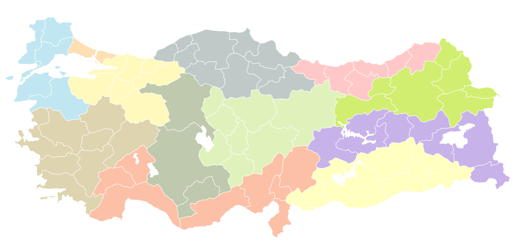

İdari bölümler
Türkiye, idari açıdan üniter bir yapıya sahiptir ve bu durum Türk kamu yönetimine şekil veren en önemli etkenlerdendir. Devletin temel işleyişindeki üç güç olan yasama, yürütme ve yargı dikkate alındığında, yerel yönetimlerin hemen hemen herhangi bir gücü yoktur. İllerin ve diğer birimlerin yönetimi, merkezi yönetimden sonra gelir. Yerel yönetimler yalnızca bulundukları yerde hizmet vermek amacıyla kurulmuşlardır. İllerin başında valiler, ilçelerin başında kaymakamlar yönetici olarak görevlidir. Vali ve kaymakamın yanı sıra, merkezi yönetimi ve belediye başkanları tarafından atanan diğer üst düzey yetkililer de vardır.
Türkiye'nin başkenti Ankara'dır. Ülkenin en büyük idari birimleri illerdir ve 81 il vardır. Bu iller ilçelere ayrılmıştır, toplamda 973 ilçe mevcuttur. Ayrıca ülke coğrafi, demografik ve ekonomik koşullar göz önüne alınarak idari anlam taşımayan 7 bölge ve 21 alt bölgeye ayrılmıştır.
Türkiye'nin güncel idârî yapısının tarihi
Türkiye Cumhuriyeti'nin 1921 ve 1924 anayasalarında devletin yeniden yapılandırılması ile ilgili kararlara yer verildi. Buna göre ülkenin idârî yapısı iller, ilçeler, bucaklar ve köyler olarak yönetim birimlerine ayrıldı. Bu ayrım yapılırken ülkenin coğrâfi ve ekonomik durumu göz önünde bulunduruldu. Yeni yönetim birimlerine merkezden yönetici atanması uygun görüldü. İllere valiler, ilçelere kaymakamlar, bucaklara bucak müdürleri tâyin olundu. Böylece, yerel yönetim birimleri merkeze bağlanarak yurdun geneline daha hızlı hizmet ulaştırılması tasarlandı. Ayrıca, 1930 yılında çıkarılan belediyeler kânûnu ile yerel yönetim birimlerinin işleyiş biçimi belirlendi.
Ayrıca, yöneticilerin yaptığı bütün işler yöneticilerin onayına bağlı idi. Bu yeni düzenleme ile hem inkılâpların ülkenin her yerine yayılması hem de hizmetlerin en iyi biçimde götürülmesi amaçlanmıştır.
2012'ye kadar Türkiye'de 2.947 belediye bulunmaktaydı. O yıl belde belediyelerinin çoğu ilçe sınırlarına dahil edildi ve belediye sayısı 1.394'e düştü.
6360 Sayılı Kanun ile 750.000 ve daha fazla nüfusa sahip olan illerin büyükşehir ilan edilmesi kararlaştırıldı. Eskiden büyükşehir belediyelerinin sınırları merkez ve çevre ilçelerden oluşurken bu kanunla bütün büyükşehir belediyesi ilan edilen illerin sınırları içinde kalan ilçeler büyükşehir belediyelerinin sınırlarına dahil edildi. Bu ilçelerdeki belde ve köyler ilçelere katıldı. Büyükşehir belediyelerinde var olan merkez ilçeler lağvedilse de diğer illerde bu uygulamaya devam edildi.
Belediye idareleri
- Büyükşehir Belediyeleri
- İl Belediyeleri
- Büyükşehir İlçe Belediyeleri
- İlçe ve Belde Belediyeleri
- Belediye Bağlı Kuruluşları
- Mahallî İdare Birlikleri
Türkiye'nin coğrafi bölgeleri
Türkiye'nin coğrafi bölgeleri, 6 Haziran-21 Haziran 1941 tarihleri arasında Ankara'da toplanan Birinci Coğrafya Kongresi tarafından belirlenmiştir. Kongre ilk, orta ve lise müfredat programları ile okul kitapları, coğrafya terimleri ve coğrafî isimlerin yazılması, Türkiye Coğrafyası'nın ana hatları ve yerlerin adlandırılması üzerinde çalışmalar yapmak amacıyla toplanmıştı. Bu çalışmanın sonucunda Türkiye'nin üç tarafının denizlerle çevrilmiş olması, dağların Anadolu'nun iç kesimlerini kıyılardan ayırması, iklim, ulaşım ve bitki örtüsü gibi kriterler dikkate alınarak Türkiye'nin coğrafi bölgeleri belirlenmiştir. İdari sınırları baz alan Türkiye'nin İBBS'si ile karıştırılmamalıdır.
Coğrafi bölgeleri oluşturan etkenler
Coğrafi bölgeler ve coğrafi bölgelerin sınırları belirlenirken şu etkenler dikkate alınmıştır:
Doğal etkenler
- Konum
- Yeryüzü şekilleri
- İklim
- Bitki örtüsü
Beşeri etkenler
- Nüfus
- Yerleşme
Ekonomik etkenler
- Tarım ve hayvancılık
- Sanayi ve madencilik
- Ticaret
- Turizm
Bölgeler ve bölümler
Doğal, beşerî ve ekonomik özellikler yönünden sınırları içinde benzerlik gösteren geniş alanlara bölge denir. Sınırları içinde benzerlikleri olan ancak bölgenin diğer yerlerinden farklı olan küçük alanlara ise bölüm denir. Birinci Coğrafya Kongresinde Türkiye 7 coğrafi bölgeye ve 21 bölüme ayrılmıştır.
- Akdeniz Bölgesi
- Adana Bölümü
- Antalya Bölümü
- Doğu Anadolu Bölgesi
- Yukarı Fırat Bölümü
- Erzurum-Kars Bölümü
- Yukarı Murat-Van Bölümü
- Hakkâri Bölümü
- Ege Bölgesi
- Ege Bölümü
- İç Batı Anadolu Bölümü
- Güneydoğu Anadolu Bölgesi
- Orta Fırat Bölümü
- Dicle Bölümü
- İç Anadolu Bölgesi
- Konya Bölümü
- Ergene Bölümü
- Çatalca-Kocaeli Bölümü
- Güney Marmara Bölümü
- Karadeniz Bölgesi
- Batı Karadeniz Bölümü
- Orta Karadeniz Bölümü
- Doğu Karadeniz Bölümü
Bölgelerin isimlendirilmesi
Türkiye'nin yedi coğrafi bölgesinden dördüne komşu olduğu denizin adı verilmiştir (Akdeniz Bölgesi, Karadeniz Bölgesi, Ege Bölgesi, Marmara Bölgesi). Diğer üç bölge de Anadolu bütünü içindeki konumlarına göre adlandırılmışlardır (İç Anadolu Bölgesi, Doğu Anadolu Bölgesi, Güneydoğu Anadolu Bölgesi). Türkiye'nin yön isimlendirilmesinde Doğu şark, Batı Garp, Güney Cenup, Kuzey Şimal olarak adlandırılır.
Bölgelerde nüfus
Türkiye’deki coğrafi bölgeler arasında nüfus miktarı ve yoğunluğu yönünden önemli farklar bulunmaktadır. Bu farklarin oluşmasında fiziki faktörler (iklim özellikleri, yerşekilleri, toprak özellikleri) ve beşeri faktörler (sanayileşme, tarım, yer altı kaynakları, turizm, ulaşım) önemli rol oynarlar. Nüfusun en yoğun olduğu bölge Marmara Bölgesi en seyrek olduğu bölge de Doğu Anadolu Bölgesidir. Marmara'nın kalabalık bir nüfusa sahip olmasında İstanbul önemli bir rol oynar.
Bölge Nüfusları (2015)
| Bölge | Nüfus Toplamı (2015) |
|---|---|
| Marmara | 23.608.079 |
| İç Anadolu | 12.381.363 |
| Ege | 10.023.549 |
| Akdeniz | 9.906.771 |
| Güneydoğu Anadolu | 8.250.718 |
| Karadeniz | 6.998.998 |
| Doğu Anadolu | 5.927.630 |
Bölgelerin özelliklerinden bazıları
Türkiye'nin coğrafi bölgelerinin karakteristik özelliklerinden bazıları şöyle sıralanabilir:
- Alanı en büyük bölge: Doğu Anadolu Bölgesi (Türkiye'nin %21'ini kaplar.)
- Alanı en küçük bölge: Güneydoğu Anadolu Bölgesi (Türkiye'nin %7.5'ini kaplar.)
- En yüksek bölge: Doğu Anadolu Bölgesi
- En alçak bölge: Marmara Bölgesi
- En uzun kıyılara sahip bölge: Ege Bölgesi
- En fazla yağış alan bölge: Karadeniz Bölgesi
- Yazın en sıcak bölge: Güneydoğu Anadolu Bölgesi
- Kışın en ılık bölge: Akdeniz Bölgesi
- En soğuk bölge: Doğu Anadolu Bölgesi
- Orman varlığı en zengin bölge: Karadeniz Bölgesi
- Orman varlığı en fakir bölge: Güneydoğu Anadolu Bölgesi
- Güneşlenme süresi en kısa bölge: Karadeniz Bölgesi
- Güneşlenme süresi en uzun bölge: Güneydoğu Anadolu Bölgesi
- Heyelanın en çok görüldüğü bölge: Karadeniz Bölgesi
- Volkanizmanın en etkin olduğu bölge: Doğu Anadolu Bölgesi
- Seracılığıın en fazla geliştiği bölge: Akdeniz Bölgesi
- Nüfusu en kalabalık bölge: Marmara Bölgesi
- Nüfusu en az olan bölge: Doğu Anadolu Bölgesi
- İklim çeşitliliği en fazla olan bölge: Marmara Bölgesi
- Enerji tüketimi en fazla olan bölge: Marmara Bölgesi
- Maden zenginlikleri en fazla olan bölge: Doğu Anadolu Bölgesi
Türkiye'nin illeri
Anadolu yarımadası ile Trakya toprakları üzerine kurulan Türkiye'nin, 81 ili vardır. İller, Türkiye'nin en büyük idari bölümleridir. Bu seksen bir il, dokuz yüz yetmiş üç ilçeye bölünmüştür. Bu ilçeler, en küçük idari birim olan mahalle ve köyleri içinde barındırır. İllerde yönetme ve yürütme görevi, içişleri bakanı tarafından önerilen ve bakanlar kurulunun onayından sonra cumhurbaşkanı tarafından atanan valiler tarafından yerine getirilir.
Osmanlı İmparatorluğu'nun yıkılışı ve 29 Ekim 1923'te Türkiye Cumhuriyeti'nin resmen kuruluşundan sonra idari sistemde değişikliklere gidildi. İki yıl sonra Ardahan, Beyoğlu, Çatalca, Dersim, Ergani, Gelibolu, Genç, Kozan, Oltu, Muş, Siverek ve Üsküdar illeri ilçeye dönüştürüldü. 1927'de ise Doğubayazıt ilçeye dönüştürüldü ve Ağrı'ya bağlandı. 1929'da Muş tekrar il oldu, Bitlis ilçe hâline getirildi. Dört yıl sonra Aksaray, Cebelibereket, Hakkâri ve Şebinkarahisar'ın ilçe olması, Mersin ile Silifke'nin birleştirilip İçel adında yeni bir ilin oluşturulmasıyla ve Artvin ile Rize'nin birleştirilip Çoruh adında yeni bir ilin oluşturulmasıyla sayı elli altıya düştü. 1936'da Rize, Tunceli ve Hakkâri tekrar il oldu, yine aynı yıl Dersim'in adı Tunceli olarak değiştirildi; 1939'da Hatay Devleti, Türkiye'ye bağlanarak il oldu. 1953'te, Uşak'ın il, Kırşehir'in ilçe olması kararlaştırıldı, 1954'te Adıyaman, Nevşehir ve Sakarya il statüsü kazandı. 1956'da Çoruh ilinin ismi Artvin olarak değiştirildi, 1957'de Kırşehir'in il statüsü geri verildi. Bu yıldan sonra otuz iki yıl boyunca il sayısında herhangi bir değişiklik olmadı. 1989'da Aksaray, Bayburt, Karaman ve Kırıkkale; 1990'da Batman ve Şırnak; 1991'de Bartın; 1992'de Ardahan ve Iğdır; 1995'te Yalova, Karabük ve Kilis; 1996'da Osmaniye, 1999'da Düzce il oldu.
Türkiye İstatistik Kurumu verilerine göre, Türkiye'nin nüfusu 2019 yılı itibarıyla 83 milyon kişiye ulaştı. Bu rakamın 77 milyonunu il ve ilçe merkezlerinde yaşayanlar oluşturdu. Ülkedeki en fazla nüfusu barındıran il İstanbul, en az nüfusu barındıran il Tunceli'dir. Ayrıca en büyük yüzölçümüne sahip il Konya, en küçük yüzölçümüne sahip il Yalova'dır. Merkezi İzmit olan Kocaeli ili, merkezi Adapazarı olan Sakarya ili, merkezi Mersin olan İçel ili ve merkezi Antakya olan Hatay ili dışında büyükşehir olmayan tüm illerin merkez ilçelerinin adı, il ile aynı adı taşır.
İller
| Renkler | |
|---|---|
| Başkent ve büyükşehir | |
| Büyükşehir | |
| Türkiye'nin illeri listesi | ||||||
|---|---|---|---|---|---|---|
| Ad | Alan (km²) | Nüfus (2019) | NY kişi/km² | Plaka kodu | Telefon kodu | Vali |
| Adana | 13.844 | 2.237.940 | 161,65 | 01 | 322 | Süleyman Elban |
| Adıyaman | 7.337 | 626.465 | 85,38 | 02 | 416 | Aykut Pekmez |
| Afyonkarahisar | 14.016 | 729.483 | 52,04 | 03 | 272 | Kübra Güran Yiğitbaşı |
| Ağrı | 11.099 | 536.199 | 48,31 | 04 | 472 | Osman Varol |
| Amasya | 5.628 | 337.800 | 60,02 | 05 | 358 | Mustafa Masatlı |
| Ankara | 25.632 | 5.639.076 | 220 | 06 | 312 | Vasip Şahin |
| Antalya | 20.177 | 2.511.700 | 124,48 | 07 | 242 | Ersin Yazıcı |
| Artvin | 7.393 | 170.875 | 23,11 | 08 | 466 | Yılmaz Doruk |
| Aydın | 8.116 | 1.110.972 | 136,88 | 09 | 256 | Hüseyin Aksoy |
| Balıkesir | 14.583 | 1.228.620 | 84,25 | 10 | 266 | Hasan Şıldak |
| Bilecik | 4.179 | 219.427 | 52,50 | 11 | 228 | Bilal Şentürk |
| Bingöl | 8.004 | 279.812 | 34,95 | 12 | 426 | Kadir Ekinci |
| Bitlis | 8.294 | 348.115 | 41.97 | 13 | 434 | Oktay Çağatay |
| Bolu | 8.313 | 316.126 | 38,02 | 14 | 374 | Ahmet Ümit |
| Burdur | 7.175 | 270.796 | 37,74 | 15 | 248 | Ali Arslantaş |
| Bursa | 10.813 | 3.056.120 | 282,63 | 16 | 224 | Yakup Canbolat |
| Çanakkale | 9.817 | 542.157 | 55,22 | 17 | 286 | İlhami Aktaş |
| Çankırı | 7.542 | 195.789 | 25,95 | 18 | 376 | Abdullah Ayaz |
| Çorum | 12.428 | 530.864 | 42,71 | 19 | 364 | Mustafa Çiftçi |
| Denizli | 12.134 | 1.037.208 | 85,47 | 20 | 258 | Ali Fuat Atik |
| Diyarbakır | 15.168 | 1.756.353 | 115,79 | 21 | 412 | Münir Karaloğlu |
| Edirne | 6.145 | 413.903 | 67,35 | 22 | 284 | Ekrem Canalp |
| Elazığ | 9.383 | 591.098 | 62,99 | 23 | 424 | Erkaya Yırık |
| Erzincan | 11.815 | 234.747 | 19,86 | 24 | 446 | Mehmet Makas |
| Erzurum | 25.006 | 762.062 | 30,47 | 25 | 442 | Okay Memiş |
| Eskişehir | 13.960 | 887.475 | 63,57 | 26 | 222 | Erol Ayyıldız |
| Gaziantep | 6.803 | 2.069.364 | 304,18 | 27 | 342 | Davut Gül |
| Giresun | 7.025 | 448.400 | 63,82 | 28 | 454 | Enver Ünlü |
| Gümüşhane | 6.668 | 164.521 | 24,67 | 29 | 456 | Kamuran Taşbilek |
| Hakkari | 7.095 | 280.991 | 39,60 | 30 | 438 | İdris Akbıyık |
| Hatay | 5.524 | 1.628.894 | 294,87 | 31 | 326 | Rahmi Doğan |
| Isparta | 8.946 | 444.914 | 49,73 | 32 | 246 | Ömer Seymenoğlu |
| Mersin | 16.010 | 1.840.425 | 114,95 | 33 | 324 | Ali İhsan Su |
| İstanbul | 5.461 | 15.519.267 | 2.841,83 | 34 | 212, 216 | Ali Yerlikaya |
| İzmir | 11.891 | 4.367.251 | 367,27 | 35 | 232 | Yavuz Selim Köşger |
| Kars | 10.193 | 285.410 | 28 | 36 | 474 | Türker Öksüz |
| Kastamonu | 13.064 | 379.405 | 29,04 | 37 | 366 | Avni Çakır |
| Kayseri | 16.970 | 1.407.409 | 82,93 | 38 | 352 | Şehmus Günaydın |
| Kırklareli | 6.459 | 361.836 | 56,02 | 39 | 288 | Osman Bilgin |
| Kırşehir | 6.584 | 242.938 | 36,89 | 40 | 386 | İbrahim Akın |
| Kocaeli | 3.397 | 1.953.035 | 574,92 | 41 | 262 | Seddar Yavuz |
| Konya | 40.838 | 2.232.374 | 54,66 | 42 | 332 | Vahdettin Özkan |
| Kütahya | 11.634 | 579.257 | 49,79 | 43 | 274 | Ali Çelik |
| Malatya | 12.259 | 800.165 | 65,27 | 44 | 422 | Aydın Baruş |
| Manisa | 13.339 | 1.440.611 | 107,99 | 45 | 236 | Yaşar Karadeniz |
| Kahramanmaraş | 14.520 | 1.154.102 | 79,48 | 46 | 344 | Ömer Faruk Coşkun |
| Mardin | 8.780 | 838.778 | 95,53 | 47 | 482 | Mahmut Demirtaş |
| Muğla | 12.654 | 1.000.773 | 77,69 | 48 | 252 | Orhan Tavlı |
| Muş | 8.650 | 408.809 | 47,26 | 49 | 436 | İlker Gündüzöz |
| Nevşehir | 5.485 | 303.010 | 55,24 | 50 | 384 | İnci Sezer Becel |
| Niğde | 7.234 | 362.861 | 48,59 | 51 | 388 | Yılmaz Şimşek |
| Ordu | 5.861 | 754.198 | 128,68 | 52 | 452 | Tuncay Sonel |
| Rize | 3.835 | 343.212 | 89,49 | 53 | 464 | Kemal Çeber |
| Sakarya | 4.824 | 1.029.650 | 213,44 | 54 | 264 | Çetin Oktay Kaldırım |
| Samsun | 9.725 | 1.348.542 | 138,66 | 55 | 362 | Zülkif Dağlı |
| Siirt | 5.717 | 330.280 | 57,77 | 56 | 484 | Osman Hacıbektaşoğlu |
| Sinop | 5.717 | 218.243 | 38,17 | 57 | 368 | Erol Karaömeroğlu |
| Sivas | 28.164 | 638.956 | 22,68 | 58 | 346 | Salih Ayhan |
| Tekirdağ | 6.190 | 1.055.412 | 170,50 | 59 | 282 | Aziz Yıldırım |
| Tokat | 10.042 | 612.747 | 61,01 | 60 | 356 | Ozan Balcı |
| Trabzon | 4.628 | 808.974 | 174,79 | 61 | 462 | İsmail Ustaoğlu |
| Tunceli | 7.582 | 84.660 | 11,16 | 62 | 428 | Mehmet Ali Özkan |
| Şanlıurfa | 19.242 | 2.073.614 | 107,76 | 63 | 414 | Abdullah Erin |
| Uşak | 5.555 | 370.509 | 66,69 | 64 | 276 | Funda Kocabıyık |
| Van | 20.921 | 1.136.757 | 54,33 | 65 | 432 | Mehmet Emin Bilmez |
| Yozgat | 13.690 | 421.200 | 30,76 | 66 | 354 | Ziya Polat |
| Zonguldak | 3.342 | 596.053 | 178,35 | 67 | 372 | Mustafa Tutulmaz |
| Aksaray | 7.659 | 416.367 | 54,36 | 68 | 382 | Hamza Aydoğdu |
| Bayburt | 3.746 | 84.843 | 22,64 | 69 | 458 | Cüneyt Epcim |
| Karaman | 8.678 | 253.279 | 29,18 | 70 | 338 | Mehmet Alpaslan Işık |
| Kırıkkale | 4.791 | 283.017 | 59,07 | 71 | 318 | Yunus Sezer |
| Batman | 4.477 | 608.659 | 135,95 | 72 | 488 | Hulusi Şahin |
| Şırnak | 7.078 | 529.615 | 74,82 | 73 | 486 | Ali Hamza Pehlivan |
| Bartın | 2.330 | 198.249 | 85,08 | 74 | 378 | Sinan Güner |
| Ardahan | 4.934 | 97.319 | 19,72 | 75 | 478 | Hüseyin Öner |
| Iğdır | 3.664 | 199.442 | 54,43 | 76 | 476 | Hüseyin Engin Sarıİbrahim |
| Yalova | 798 | 270.976 | 339,56 | 77 | 226 | Muammer Erol |
| Karabük | 4.142 | 248.458 | 59,98 | 78 | 370 | Fuat Gürel |
| Kilis | 1.412 | 142.490 | 100,91 | 79 | 348 | Recep Soytürk |
| Osmaniye | 3.320 | 538.759 | 162,27 | 80 | 328 | Erdinç Yılmaz |
| Düzce | 2.492 | 392.166 | 157,36 | 81 | 380 | Cevdet Atay |
Türkiye il merkez rakımları
| İl Adı | Rakım |
|---|---|
| Adana | 25 |
| Adıyaman | 701 |
| Afyonkarahisar | 1012 |
| Ağrı | 1630 |
| Amasya | 400 |
| Ankara | 905 |
| Antalya | 62 |
| Artvin | 530 |
| Aydın | 92 |
| Balıkesir | 145 |
| Bilecik | 513 |
| Bingöl | 1159 |
| Bitlis | 1637 |
| Bolu | 741 |
| Burdur | 963 |
| Bursa | 238 |
| Çanakkale | 11 |
| Çankırı | 730 |
| Çorum | 822 |
| Denizli | 392 |
| Diyarbakır | 674 |
| Edirne | 50 |
| Elâzığ | 1041 |
| Erzincan | 1216 |
| Erzurum | 1923 |
| Eskişehir | 796 |
| Gaziantep | 838 |
| Giresun | 14 |
| Gümüşhane | 1174 |
| Hakkâri | 1756 |
| Hatay | 89 |
| Isparta | 1058 |
| Mersin | 18 |
| İstanbul | 25 |
| İzmir | 9 |
| Kars | 1756 |
| Kastamonu | 814 |
| Kayseri | 1060 |
| Kırklareli | 231 |
| Kırşehir | 991 |
| Kocaeli | 4 |
| Konya | 1023 |
| Kütahya | 958 |
| Malatya | 970 |
| Manisa | 79 |
| Kahramanmaraş | 562 |
| Mardin | 938 |
| Muğla | 659 |
| Muş | 1334 |
| Nevşehir | 1197 |
| Niğde | 1239 |
| Ordu | 25 |
| Rize | 11 |
| Sakarya | 41 |
| Samsun | 10 |
| Siirt | 887 |
| Sinop | 27 |
| Sivas | 1313 |
| Tekirdağ | 28 |
| Tokat | 630 |
| Trabzon | 36 |
| Tunceli | 922 |
| Şanlıurfa | 527 |
| Uşak | 915 |
| Van | 1728 |
| Yozgat | 1317 |
| Zonguldak | 10 |
| Aksaray | 1228 |
| Bayburt | 1555 |
| Karaman | 1063 |
| Kırıkkale | 746 |
| Batman | 570 |
| Şırnak | 1343 |
| Bartın | 12 |
| Ardahan | 1799 |
| Iğdır | 860 |
| Yalova | 8 |
| Karabük | 264 |
| Kilis | 660 |
| Osmaniye | 121 |
| Düzce | 149 |
Rakım, valilik binalarının bulunduğu yerdir.
Eski iller
- Doğubayazıt ili, Ağrı iline bağlandı.
- Çatalca ili, İstanbul iline bağlandı.
- Gelibolu ili, Çanakkale iline bağlandı.
- Genç ili, Bingöl iline bağlandı.
- Kozan ili, Adana iline bağlandı.
- Şebinkarahisar ili, Giresun iline bağlandı.
- Siverek ili, Şanlıurfa iline bağlandı.
- Silifke ili, Mersin iline bağlandı.
Türkiye'nin İBBS'si
Türkiye İstatistiki Bölge Birimleri Sınıflandırması (Türkiye İBBS) (Fransızca: nomenclature d'unités territoriales statistiques, NUTS), Avrupa Birliği ülkelerinin kullandığı İstatistiki Bölge Birimleri Sınıflandırması içinde Türkiye için kullanılan sınıflandırmadır.
Tarihçe
Türkiye idari olarak 81 ile ayrılmıştır ve Türkiye'de daha önceki demografik araştırmalarda örneklem seçimi yapılması amacıyla beş bölge tanımlanmıştır. Bu bölgesel ayrım, ülkenin değişik yöreleri arasındaki demografik, toplumsal, kültürel ve ekonomik farklılıkların incelenmesinde sıklıkla kullanılan bir değişken haline gelmiştir. Söz konusu Batı, Güney, Orta, Kuzey ve Doğu bölgeleri, birbirine komşu olan değişik sayılardaki illerden oluşmaktadır.
Geleneksel olarak kullanılan yedi coğrafi bölgeye ek olarak, 22 Eylül 2002 günü yeni bir bölge sınıflandırılması oluşmuştur. Türkiye’nin Avrupa Birliğine uyum süreci doğrultusunda, 2002/4720 no’lu kanun gereğince, Devlet Planlama Teşkilatı ve Türkiye İstatistik Enstitüsü üç ayrı düzeyde İBBS bölgesi oluşturmuşlardır.
İstatistiki faktörler
İstatistiki bölgelerin tanımlanmasında kullanılan temel faktörler:
- Nüfus
- Coğrafya
- Bölgesel Kalkınma Planları
- Temel İstatistiki Göstergeler
- İllerin Sosyo-ekonomik Gelişmişlik Sıralamasıdır
Birinci ve ikinci derece
| KOD | İBBS-I (12 bölge) | İBBS-II (26 alt bölge) | İBBS-III (81 il) |
|---|---|---|---|
| TR | Türkiye'nin İBBS'si | ||
| TR1 | İstanbul | İstanbul alt bölgesi |  |
| TR2 | Batı Marmara | Tekirdağ alt bölgesi, Balıkesir alt bölgesi | |
| TR3 | Ege | İzmir alt bölgesi, Aydın alt bölgesi, Manisa alt bölgesi | |
| TR4 | Doğu Marmara | Bursa alt bölgesi, Kocaeli alt bölgesi | |
| TR5 | Batı Anadolu | Ankara alt bölgesi, Konya alt bölgesi | |
| TR6 | Akdeniz | Antalya alt bölgesi, Adana alt bölgesi, Hatay alt bölgesi | |
| TR7 | Orta Anadolu | Kırıkkale alt bölgesi, Kayseri alt bölgesi | |
| TR8 | Batı Karadeniz | Zonguldak alt bölgesi, Kastamonu alt bölgesi, Samsun alt bölgesi | |
| TR9 | Doğu Karadeniz | Trabzon alt bölgesi | |
| TRA | Kuzeydoğu Anadolu | Erzurum alt bölgesi, Ağrı alt bölgesi | |
| TRB | Ortadoğu Anadolu | Malatya alt bölgesi, Van alt bölgesi | |
| TRC | Güneydoğu Anadolu | Gaziantep alt bölgesi, Şanlıurfa alt bölgesi, Mardin alt bölgesi | |
İkinci ve üçüncü derece
| Kod | Düzey 1 (12 bölge) | Kod | Düzey 2 (26 alt bölge) | Kod | Düzey 3 (81 il) |
|---|---|---|---|---|---|
| TR1 | İstanbul | TR10 | İstanbul alt bölgesi | TR100 | İstanbul |
| TR2 | Batı Marmara | TR21 | Tekirdağ alt bölgesi | TR211 | Tekirdağ |
| TR212 | Edirne | ||||
| TR213 | Kırklareli | ||||
| TR22 | Balıkesir alt bölgesi | TR221 | Balıkesir | ||
| TR222 | Çanakkale | ||||
| TR3 | Ege | TR31 | İzmir alt bölgesi | TR310 | İzmir |
| TR32 | Aydın alt bölgesi | TR321 | Aydın | ||
| TR322 | Denizli | ||||
| TR323 | Muğla | ||||
| TR33 | Manisa alt bölgesi | TR331 | Manisa | ||
| TR332 | Afyonkarahisar | ||||
| TR333 | Kütahya | ||||
| TR334 | Uşak | ||||
| TR4 | Doğu Marmara | TR41 | Bursa alt bölgesi | TR411 | Bursa |
| TR412 | Eskişehir | ||||
| TR413 | Bilecik | ||||
| TR42 | Kocaeli alt bölgesi | TR421 | Kocaeli | ||
| TR422 | Sakarya | ||||
| TR423 | Düzce | ||||
| TR424 | Bolu | ||||
| TR425 | Yalova | ||||
| TR5 | Batı Anadolu | TR51 | Ankara alt bölgesi | TR511 | Ankara |
| TR52 | Konya alt bölgesi | TR521 | Konya | ||
| TR522 | Karaman | ||||
| TR6 | Akdeniz | TR61 | Antalya alt bölgesi | TR611 | Antalya |
| TR612 | Isparta | ||||
| TR613 | Burdur | ||||
| TR62 | Adana alt bölgesi | TR621 | Adana | ||
| TR622 | Mersin | ||||
| TR63 | Hatay alt bölgesi | TR631 | Hatay | ||
| TR632 | Kahramanmaraş | ||||
| TR633 | Osmaniye | ||||
| TR7 | Orta Anadolu | TR71 | Kırıkkale alt bölgesi | TR711 | Kırıkkale |
| TR712 | Aksaray | ||||
| TR713 | Niğde | ||||
| TR714 | Nevşehir | ||||
| TR715 | Kırşehir | ||||
| TR72 | Kayseri alt bölgesi | TR721 | Kayseri | ||
| TR722 | Sivas | ||||
| TR723 | Yozgat | ||||
| TR8 | Batı Karadeniz | TR81 | Zonguldak alt bölgesi | TR811 | Zonguldak |
| TR812 | Karabük | ||||
| TR813 | Bartın | ||||
| TR82 | Kastamonu alt bölgesi | TR821 | Kastamonu | ||
| TR822 | Çankırı | ||||
| TR823 | Sinop | ||||
| TR83 | Samsun alt bölgesi | TR831 | Samsun | ||
| TR832 | Tokat | ||||
| TR833 | Çorum | ||||
| TR834 | Amasya | ||||
| TR9 | Doğu Karadeniz | TR90 | Trabzon alt bölgesi | TR901 | Trabzon |
| TR902 | Ordu | ||||
| TR903 | Giresun | ||||
| TR904 | Rize | ||||
| TR905 | Artvin | ||||
| TR906 | Gümüşhane | ||||
| TRA | Kuzeydoğu Anadolu | TRA1 | Erzurum alt bölgesi | TRA11 | Erzurum |
| TRA12 | Erzincan | ||||
| TRA13 | Bayburt | ||||
| TRA2 | Ağrı alt bölgesi | TRA21 | Ağrı | ||
| TRA22 | Kars | ||||
| TRA23 | Iğdır | ||||
| TRA24 | Ardahan | ||||
| TRB | Ortadoğu Anadolu | TRB1 | Malatya alt bölgesi | TRB11 | Malatya |
| TRB12 | Elazığ | ||||
| TRB13 | Bingöl | ||||
| TRB14 | Tunceli | ||||
| TRB2 | Van alt bölgesi | TRB21 | Van | ||
| TRB22 | Muş | ||||
| TRB23 | Bitlis | ||||
| TRB24 | Hakkari | ||||
| TRC | Güneydoğu Anadolu | TRC1 | Gaziantep alt bölgesi | TRC11 | Gaziantep |
| TRC12 | Adıyaman | ||||
| TRC13 | Kilis | ||||
| TRC2 | Şanlıurfa alt bölgesi | TRC21 | Şanlıurfa | ||
| TRC22 | Diyarbakır | ||||
| TRC3 | Mardin alt bölgesi | TRC31 | Mardin | ||
| TRC32 | Batman | ||||
| TRC33 | Şırnak | ||||
| TRC34 | Siirt |
Nüfus
TÜİK verilerine göre 2020 yılında bölgelerin kırsal ve kentsel nüfusları şu şekildedir:
| KOD | İBBS-I (12 bölge) | Nüfus | Kırsal Nüfus | Kent Nüfusu |
|---|---|---|---|---|
| TR | Türkiye | 83.614.354 | 5.878.321 | 77.736.041 |
| TR1 | İstanbul | 15.462.452 | 0 | 15.462.452 |
| TR2 | Batı Marmara | 3.632.398 | 417.106 | 3.215.292 |
| TR3 | Ege | 10.689.115 | 543.886 | 10.145.229 |
| TR4 | Doğu Marmara | 8.235.816 | 331.387 | 7.904.429 |
| TR5 | Batı Anadolu | 8.168.261 | 62.605 | 8.105.656 |
| TR6 | Akdeniz | 10.759.218 | 320.465 | 10.438.753 |
| TR7 | Orta Anadolu | 4.088.228 | 756.820 | 3.331.408 |
| TR8 | Batı Karadeniz | 4.638.622 | 1.088.870 | 3.549.752 |
| TR9 | Doğu Karadeniz | 2.677.584 | 382.625 | 2.294.959 |
| TRA | Kuzeydoğu Anadolu | 2.192.453 | 597.343 | 1.595.110 |
| TRB | Ortadoğu Anadolu | 3.951.286 | 733.546 | 3.217.748 |
| TRC | Güneydoğu Anadolu | 9.118.921 | 643.668 | 8.475.253 |